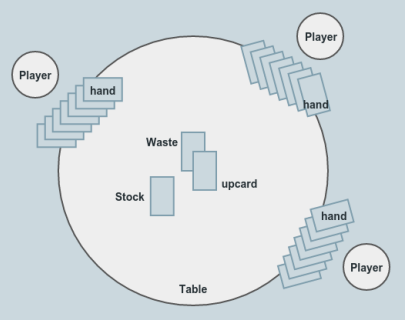

OOOMMM¶
Obvious Object Oriented Mau Mau Modelling¶
Switching into egghead mode, you could say that a game of Mau Mau can be modelled as a series of interactions between actors with adjustable attributes and behaviours modifying their own attributes and initiating reactions and attribute changes in other actors. If you call the actors objects and the behaviour methods, you have a basic description of object oriented programming.
Object-oriented design is, in its simplest form, based on a seemingly elementary idea. Computing systems perform certain actions on certain objects; to obtain flexible and reusable systems, it is better to base the structure of software on the objects than on the actions.
That's all very ... abstract, isn't it? Yes it is! Meyer goes on:
Once you have said this, you have not really provided a definition, but rather posed a set of problems: What precisely is an object? How do you find and describe the objects? How should programs manipulate objects? What are the possible relations between objects? How does one explore the commonalities that may exist between various kinds of objects? How do these ideas relate to classical software engineering concerns such as correctness, ease of use, efficiency?
What does that tell us? OO is just one of many ways of thinking about the problems you are trying to solve with software. Sometimes that way of thinking matches well with the problem you are trying to solve. There are also a lot of possibly very different answers to the questions posed by Meyer and they manifest in very different approaches to the implementation of OO in different programming languages.
High level view¶
One koan in the Zen of Python says: "If the implementation is easy to explain, it may be a good idea". Let's put this to the test and explain the implementation of our Mau Mau program by simply describing the conditions and rules of the game using a rough approximation of the programs' terminology and see if the objects and their interactions make the implementation look obvious.

The image shows all the important elements of the simulation.
Note
Objects used in the program are marked like this, functions that describe (inter)actions are marked like this).
The game comprises two phases. We could call them "setup" and "play".
Setup: The players are invited to a game at the table. A deck of cards is shuffled. The same amount of cards is dealt to the players to form their hand. One card - the upcard - is drawn from the stock and placed face up on the table. The remaining cards are piled face down on the table and form the stock. Now all is in place to play the game.
Play: The players play in turns. They choose a card that is playable with the upcard according to the rules (same suit or same value and special rules) and place it on the table. The played card is the new upcard and the old upcard is now part of the waste. Now the next player is up. If a player can't find a card to play, they have to draw one from the stock and the next player is up. If the stock is empty, the waste cards are shuffled to form the new stock. The game is over and the winner is found as soon as one player plays the last card of their hand.
Easy enough to explain. This description of the rules and the gameplay can double already as a high level explanation of the implementation. It can also be read as an abstract story about a game, where the concrete story would be the description of an actual game. The program code can be viewed as story shape or abstract plot, with different executions of it as concrete stories. If you have no idea what I mean just watch Kurt Vonneguts short talk about the shape of stories and transfer your insights into thinking about abstract program code and its concrete execution :)
The modelling problem we have here is ideal for creating custom data structures (which classes are), so we will model the game flow using custom Python classes that interact in the way described above.